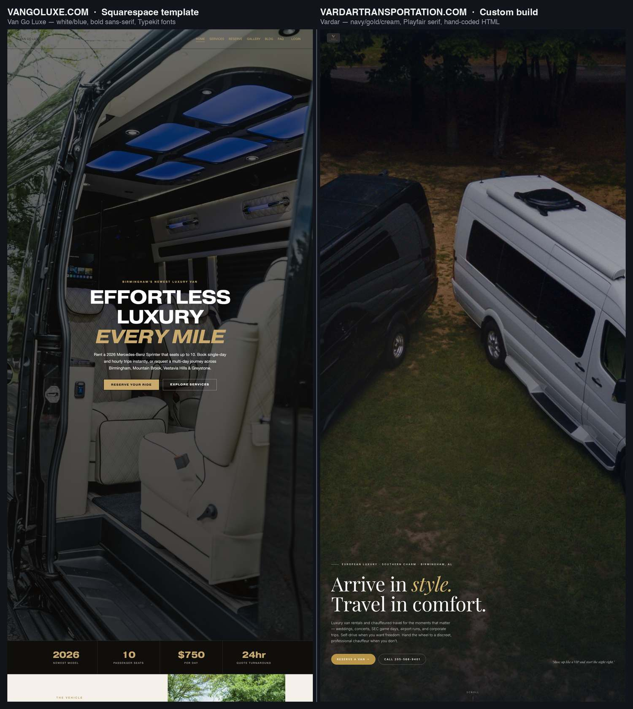
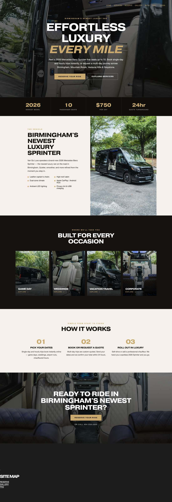
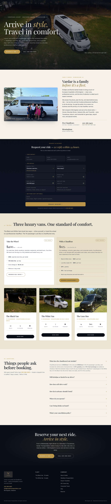

vardartransportation.com vs. vangoluxe.com
Source-code & design comparison
Van Go Luxe has claimed that the Vardar Transportation website copied their site, citing "proof in the code." This exhibit compares both live sites — rendered output and underlying source — captured July 11, 2026.
The two sites share no code (one is a Squarespace template, one is hand-written HTML), no text (zero shared phrases of six or more words across every page of both sites), no assets, no fonts, and no layout structure. Vardar's domain also predates Van Go Luxe's by nearly three months.
The two homepages, side by side
Different headline, typography, photography, palette, and layout. Van Go Luxe opens on an interior shot with bold all-caps sans-serif type; Vardar opens on an aerial fleet photo with serif sentence-case type.

Every section, top to bottom
Scroll each column independently. The section order, content, and components have nothing in common: Van Go Luxe runs stats-bar → vehicle → occasions → how-it-works → CTA. Vardar runs family story → booking form → pricing split → three vehicle cards → FAQ → footer.


Two sites, two different kinds of code
This is the claim's home turf — and where it collapses fastest. Van Go Luxe's source is machine-generated by Squarespace: hashed class names (fe-6a2ae113…), sqs-block wrappers, and assets loaded from squarespace-cdn.com. Vardar's source is hand-written semantic HTML with human-readable class names, inline comments, and schema.org structured data. Neither could be produced by copying the other — they are different species of code.
<div data-fluid-engine="true"><style>
.fe-6a2ae113a5093e204b5d30f6 {
--grid-gutter: calc(var(--sqs-mobile-site-gutter, 6vw) - 11.0px);
--cell-max-width: calc( ( var(--sqs-site-max-width, 1500px) - (11.0px * (8 - 1)) ) / 8 );
display: grid;
position: relative;
grid-area: 1/1/-1/-1;
grid-template-rows: repeat(6,minmax(24px, auto));
grid-template-columns:
minmax(var(--grid-gutter), 1fr)
repeat(8, minmax(0, var(--cell-max-width)))
minmax(var(--grid-gutter), 1fr);
row-gap: 11.0px;
column-gap: 11.0px;
overflow-x: hidden;
overflow-x: clip;
}
@media (min-width: 768px) {
.background-width--inset .fe-6a2ae113a5093e204b5d30f6 {
--inset-padding: calc(var(--sqs-site-gutter) * 2);
}
.fe-6a2ae113a5093e204b5d30f6 {
--grid-gutter: calc(var(--sqs-site-gutter, 4vw) - 11.0px);
--cell-max-width: calc( ( var(--sqs-site-max-width, 1500px) - (11.0px * (24 - 1)) ) / 24 );
--inset-padding: 0vw;
--row-height-scaling-factor: 0.0215;
--container-width: min(var(--sqs-site-max-width, 1500px), calc(100vw - var(--sqs-site-gutter, 4vw) * 2 - var(--inset-padding) ));
grid-template-rows: repeat(3,minmax(calc(var(--container-width) * var(--row-height-scaling-factor)), auto));
grid-template-columns:
minmax(var(--grid-gutter), 1fr)
repeat(24, minmax(0, var(--cell-max-width)))
minmax(var(--grid-gutter), 1fr);
}
}
.fe-block-cdb712fea8c88682adba {
grid-area: 1/2/7/10;
z-index: 1;
@media (max-width: 767px) {
}
}
.fe-block-cdb712fea8c88682adba .sqs-block {
justify-content: flex-start;
}
.fe-block-cdb712fea8c88682adba .sqs-block-alignment-wrapper {
align-items: flex-start;
}
@media (min-width: 768px) {
.fe-block-cdb712fea8c88682adba {
grid-area: 1/2/2/6;
z-index: 1;
}
.fe-block-cdb712fea8c88682adba .sqs-block {
justify-content: flex-start;
}
.fe-block-cdb712fea8c88682adba .sqs-block-alignment-wrapper {
align-items: flex-start;
}
}
</style><div class="fluid-engine fe-6a2ae113a5093e204b5d30f6"><div class="fe-block fe-block-cdb712fea8c88682adba"><div class="sqs-block website-component-block sqs-block-website-component sqs-block-code code-block" data-block-css="["https://definitions.sqspcdn.com/website-component-definition/static-assets/website.components.code/0760e59d-ac51-41a2-9465-336fbf4538cd_787/website.components.code.styles.css"]" data-block-scripts="["https://definitions.sqspcdn.com/website-component-definition/static-assets/website.components.code/0760e59d-ac51-41a2-9465-336fbf4538cd_787/website.components.code.visitor.js"]" data-block-type="1337" data-definition-name="website.components.code" data-sqsp-block="code" data-website-component-id="cdb712fea8c88682adba" id="block-cdb712fea8c88682adba"><div class="sqs-block-content">
<div
class="sqs-code-container"
data-localized="{"enableSafeModeButton":"Preview in safe mode","e
<body>
<header class="nav" id="nav">
<a href="#" class="brand">
<img src="img/vardar-logo.jpg" alt="Vardar Luxury Van Transportation" class="brand-logo">
</a>
<button class="menu-btn" id="menuBtn" aria-expanded="false" aria-controls="navMenu">Menu</button>
</header>
<!-- Mobile drawer — lives at top level (NOT inside header.nav) so iOS Safari
doesn't trap it in the header's stacking context or bounding box. -->
<nav id="navMenu">
<ul>
<li><a href="#about">About</a></li>
<li><a href="#fleet">Fleet</a></li>
<li><a href="#faq">FAQ</a></li>
<li><a href="#book" class="nav-cta">Reserve</a></li>
</ul>
</nav>
<section class="hero">
<div class="hero-stage">
<div class="hero-photo"></div>
<div class="hero-grain"></div>
</div>
<div class="hero-frame">
<div class="hero-eyebrow">European luxury · Southern charm · Birmingham, AL</div>
<h1>Arrive in <em>style.</em><br>Travel in comfort.</h1>
<p class="hero-statement">Luxury van rentals and chauffeured travel for the moments that matter — weddings, concerts, SEC game days, airport runs, and corporate trips. Self-drive when you want freedom. Hand the wheel to a discreet, professional chauffeur when you don't.</p>
<div class="hero-foot">
<div class="hero-actions">
<a href="#book" class="hero-cta">Reserve a Van →</a>
<a href="tel:2055669401" class="hero-cta ghost">Call 205-566-9401</a>
</div>
<div class="hero-meta">"Show up like a VIP and start the night right."</div>
</div>
</div>
<div class="scroll-cue">Scroll</div>
</section>
<section class="family-band" id="about">
<div class="wrap">
<div class="family-grid">
<figure class="family-photo">
<img src="img/family-with-van.jpg" alt="The Vardar family standing with the White Van" loading="lazy">
<figcaption>The Vardar family · Birmingham, AL</figcaption>
</figure>
<div class="family-copy">
<span class="eyebrow">Family-Owned · Birmingham, AL</span>
<h2>Vardar is a family<br><em>before it's a fleet.</em></h2>
<p>Kristijan and Rachel started Vardar to bring a touch of European hospitality to Birmingham — clean vans, professional service, and the kind of attention to detail you'd expect overseas.</p>
<p>We answer the phone, plan the trip, and stand behind every ride — but we hire and train trusted professional chauffeurs to do the driving. You get the polish of an owner-run business and the privacy of a real chauffeur service.</p>
<p>We're based in Birmingham and serve the whole metro — Hoover, Mountain Brook, Vestavia Hills, and Trussville — plus Tuscaloosa, Auburn, and Huntsville for game days, airport runs, and special events.</p>
<div class="family-stats">
<div class="fs-item"><strong>Pro Chauffeurs</strong><span>Vetted, trained, & discreet</span></div>
<div class="fs-item"><strong><a href="tel:2055669401" style="color:inherit;text-decoration:none;border-bottom:1px solid var(--gold-deep)">205-566-9401</a></strong><span>Call or text anytime</span></div>
<div class="fs-item"><strong>Birmingham</strong><span>Born & based here</span></div>
</div>
</div>
</div>
</div>
</section>
Five independent tests, five clean results
| Test | Method | Result | Verdict |
|---|---|---|---|
| Shared text | Word-sequence (n-gram) overlap between the Van Go Luxe homepage and every page of the Vardar site. | One shared 5-word phrase — "Mountain Brook, Vestavia Hills and", a list of suburbs both serve. Zero shared phrases of 6+ words. | NO MATCH |
| Shared code | Class-name and markup comparison of both sources. | Van Go: auto-generated Squarespace classes (sqs-block-content, fluid-engine). Vardar: hand-written (hero-frame, qb-field, fc-slide). No overlap. | NO MATCH |
| Shared assets | Every image, script, and stylesheet URL on the Vardar site. | Vardar loads zero external assets — nothing from squarespace-cdn.com or any Van Go property. A repo-wide search for "vango" returns nothing. | NO MATCH |
| Fonts & palette | Font-loading and CSS custom-property comparison. | Van Go: Adobe Typekit + IBM Plex Mono, white/blue scheme. Vardar: Playfair Display + Inter + JetBrains Mono, ink-navy/burgundy/gold/bone tokens. | NO MATCH |
| Platform | Framework and hosting fingerprints. | Van Go: Squarespace (closed template system — its code is not copyable outward, nor pasteable inward). Vardar: static HTML/CSS/JS on Vercel with a custom serverless booking API and Supabase backend. | NO MATCH |
Vardar was in this market first
Per public WHOIS records. Vardar's domain was registered and its brand in development months before vangoluxe.com existed. Overlap in the business model — Birmingham luxury Sprinter rental, self-drive or chauffeured, game-day and wedding packages — is the standard shape of this industry, and business models are not copyrightable.
vardartransportation.com registered. Site subsequently designed and built as custom HTML by Williams Digital.
vangoluxe.com registered — 80 days later. Site built on a Squarespace template. No archived snapshots exist in the Wayback Machine.